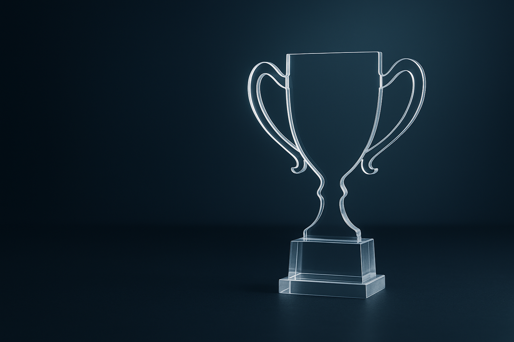

Laser-Cut, Trophies, Key Rings And Boxes
Craftbin-Vaal specialises in acrylic trophies, key rings, utility boxes, and gift boxes. Based in Meyerton in the Vaal Triangle, we are a small business dedicated to providing personalised service and ensuring customer satisfaction.